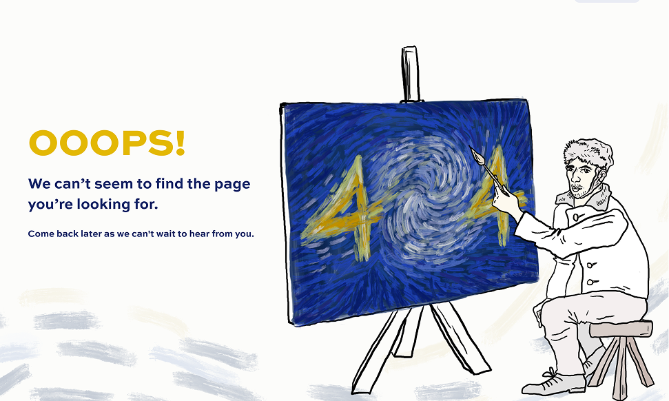
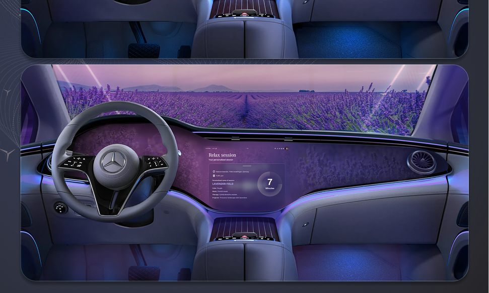
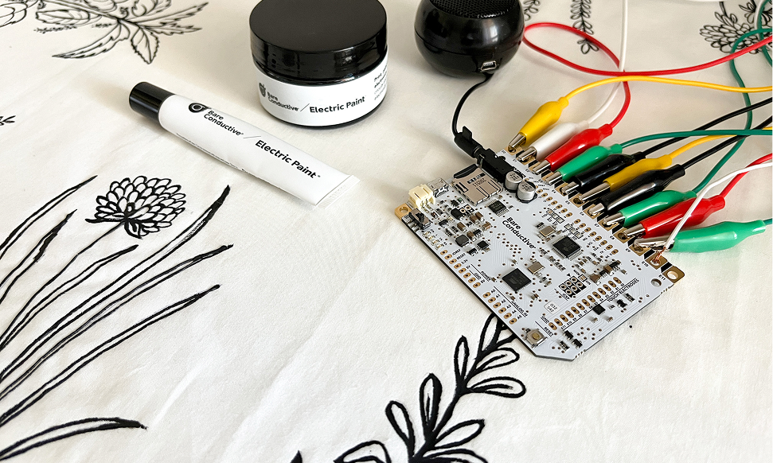
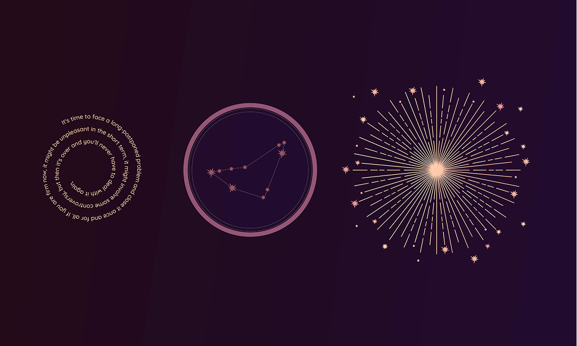

PortfolioHello, I’m Petra
— a Graphic and UX/UI Designer.
I'm a UX/UI and graphic designer passionate about creating user-friendly interfaces and strong visual identities. This portfolio highlights my university projects, blending design, function, and creativity.
The project was part of a university course focused on assisting people in rural areas. I developed an app to help rural pensioners earn extra income by enabling them to easily sell their products using mobile vans.
During the project, I conducted field research, including interviews and surveys, and created the user flow,
wireframes, and user tests.
I also designed the app’s logo and illustrations.
404 website design
In this course, we learned how to transfer a website designed in Figma to Webflow.
Our task was to create a funny 404 page, which I designed and built myself in Webflow.
The page includes animations: Van Gogh’s hand moves, and the cursor is his ear, adding a playful and creative touch to the experience.


Mercedes 'ZenWheels'
This project was a team work.
Our concept was based on the idea that more and more people experience stress in their daily lives. We aimed to create a car that helps users relax through guided relaxation sessions.
Tangible Tablecloth
This interactive tablecloth is designed for young children to learn about useful and edible garden herbs in a fun, musical way.


AR Hororscope
I designed this product in a class called ‘Computer Vision’, where we explored augmented reality.
My concept was to create a pendant that, when scanned, displays your daily horoscope.
The pendant’s illustration was designed and hand-drawn by me. It is made of silver and was laser-cut for precision.
Evosoft Onboarding App design
This project involved designing a complete onboarding system for Evosoft.
The goal was to create a user-friendly and efficient experience for new employees, helping them integrate smoothly into the company.